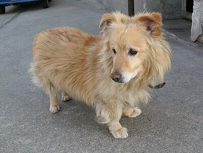
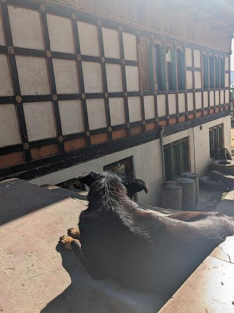
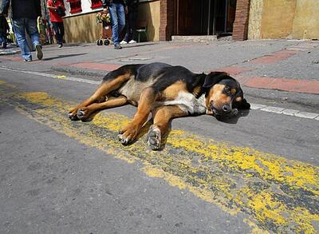
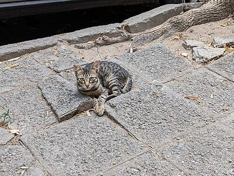
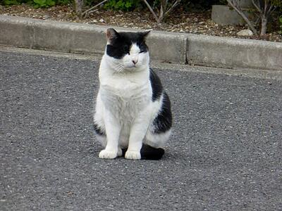
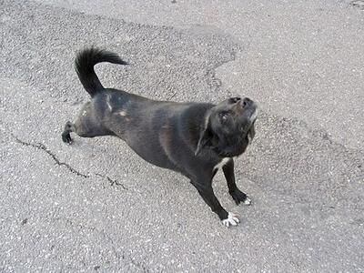

La zona es un círculo, nunca un punto
Toda ubicación pública se dibuja como un área de 500 m. No usamos el pin de mapa en ninguna pantalla, ni siquiera como icono.
RF-15 · RNF-03 · HU-16PawConnect reúne los reportes de mascotas perdidas y encontradas de Bogotá y la Sabana y los compara por foto. El sistema propone cinco candidatos; una persona decide si es su animal. Esta guía fija cómo se ve y cómo habla todo eso.
5 posibles coincidencias
Perros encontrados a menos de 15 km de Suba en los últimos 60 días.
Cada decisión visual de abajo vuelve a una de estas reglas. Si una pantalla nueva no encaja con ninguna, la pantalla está mal o falta una regla.
Toda ubicación pública se dibuja como un área de 500 m. No usamos el pin de mapa en ninguna pantalla, ni siquiera como icono.
RF-15 · RNF-03 · HU-16Las cuatro esquinas del marco de recorte muestran lo que el sistema vio y lo que conserva. Si no ve un perro o un gato, lo dice ahí mismo.
RF-03 · RN-04 · HU-03Los candidatos van numerados del 01 al 05. Sin porcentajes, barras, estrellas ni colores de «alta coincidencia».
RF-04 · RN-02 · HU-04«No es» y «Sí, puede ser» quedan fijos abajo, al alcance del pulgar. Un caso solo pasa a resuelto cuando alguien lo marca.
RF-05 · RF-06 · RN-01El número aparece enmascarado hasta que las dos personas aceptan. Las dos llaves se dibujan siempre, para que se vea qué falta.
RF-07 · RN-05 · HU-08Consentimiento y ubicación se piden con casillas vacías, cada una por separado, con la versión del texto a la vista.
RF-13 · RNF-04 · Ley 1581 de 2012La interfaz es casi neutra; el color lo ponen las fotos de los animales. El magenta marca la acción principal y los reportes de pérdida. El violeta y el fondo lavanda del prototipo salen.
Es lo primero que alguien necesita saber de una foto. Va siempre como etiqueta llena, con la palabra escrita. Nunca usa los colores de estado.
blanco sobre magenta 4,8:1 · sobre tinta 14,6:1Punto más palabra sobre un fondo suave. El verde solo significa «resuelto»: no lo usamos para privacidad ni para éxito genérico.
6,8 · 6,1 · 5,5 · 6,3 : 1Quien perdió a su animal ya está alarmado. La interfaz no suma alarma: el rojo aparece cuando algo falló o cuando hay una veterinaria abierta ahora.
#a8231b · 6,0:1 sobre su fondoFunnel Display en los títulos, Funnel Sans en el texto. DM Mono para lo que alguien copia o dicta: número de caso, código SMS, fechas, distancias, la posición del candidato. Sin mayúsculas espaciadas: todo en tipo oración.
No son decoración: cada una dibuja una regla del documento técnico. Radios redondeados de 10, 16 y 24 px; botones en píldora; iconos de trazo de 1,75 px.
Borde punteado en magenta y un relleno al 12 %. El centro que se dibuja es el del círculo, no el sitio exacto: el servidor ya lo movió antes de mandarlo. Los radios de búsqueda (15 km) y de alertas (5 km) usan el mismo dibujo, más grande.
RF-15 · RF-19 · RNF-03
Perro
No se veCuatro esquinas blancas alrededor del animal que el detector encontró. Es lo que se guarda; el resto de la foto se descarta. Cuando no hay perro ni gato visible, la foto se apaga y la etiqueta roja dice por qué.
RF-03 · RN-04Una fila por persona: llena cuando aceptó, punteada mientras espera. Debajo, el número en DM Mono con candado, enmascarado salvo los dos últimos dígitos, que solo confirman que hay un número.
RF-07 · RN-05Un solo dibujo en tinta para fundaciones y prestadores, con el nivel escrito. Nunca dorado ni de colores: se gana con documentos, no con diseño. Retirado queda tachado y con fecha, para que la retirada también se vea.
RF-14 · RF-16 · HU-10Un botón lleno por vista y uno tonal; campos de 48 px con la etiqueta arriba y el error abajo; tarjetas con una sola línea de borde. Todo cabe a 360 px.
Lleno: la acción que avanza. Tonal: la alternativa. Enlace subrayado: lo que no es una acción del flujo.
Prueba con una más cerca, con luz de día, donde se vea la cara.
Es el máximo por cuenta. Puedes publicar otro mañana desde las 00:00.

Encontrado
PerdidoPediste contacto con quien encontró al candidato 01.
Hablamos con alguien que tiene miedo y poco tiempo. Frases cortas, el siguiente paso siempre claro, cifras con su fuente. Nunca prometemos encontrar al animal.
El camino de quien perdió a Toby, de la primera pregunta a la ficha del caso, más el mapa público. Dibujadas al ancho mínimo que exige RNF-08: si funcionan aquí, funcionan en cualquier celular.
De 1 a 5. Sirven más las que muestran la cara y el pelaje de cerca.
No vemos un perro ni un gato. La quitamos; puedes cambiarla por otra.
Solo perros, a menos de 15 km de Suba, reportados en los últimos 60 días.
Lo reportó una persona con celular verificado. Está en un hogar temporal.
¿Es Toby?
Tu número sigue oculto hasta que los dos acepten. Puedes mandarle un mensaje corto mientras tanto.

Encontrado
Perdido